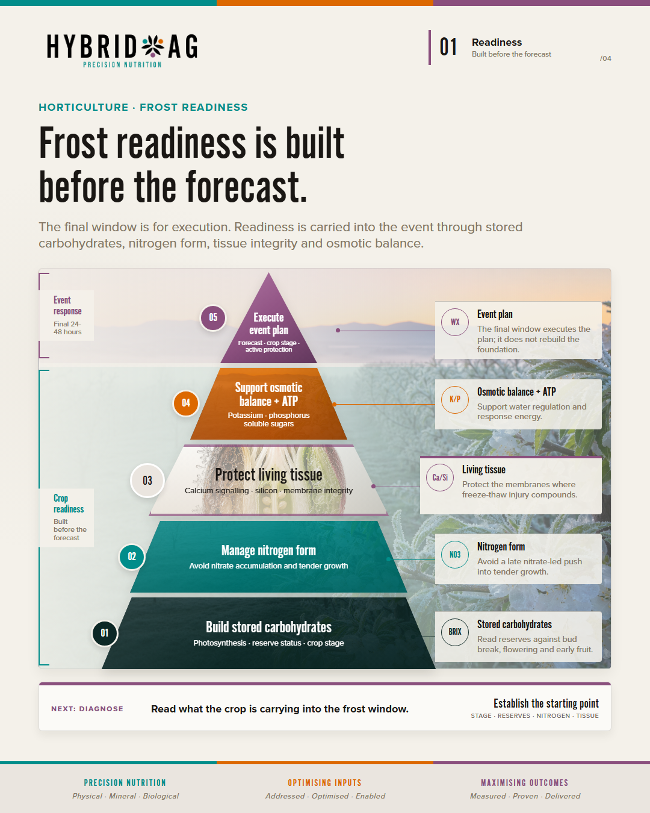
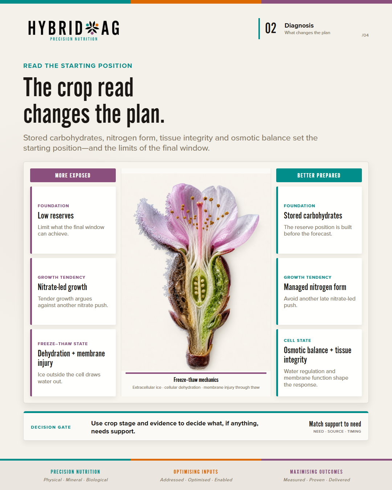
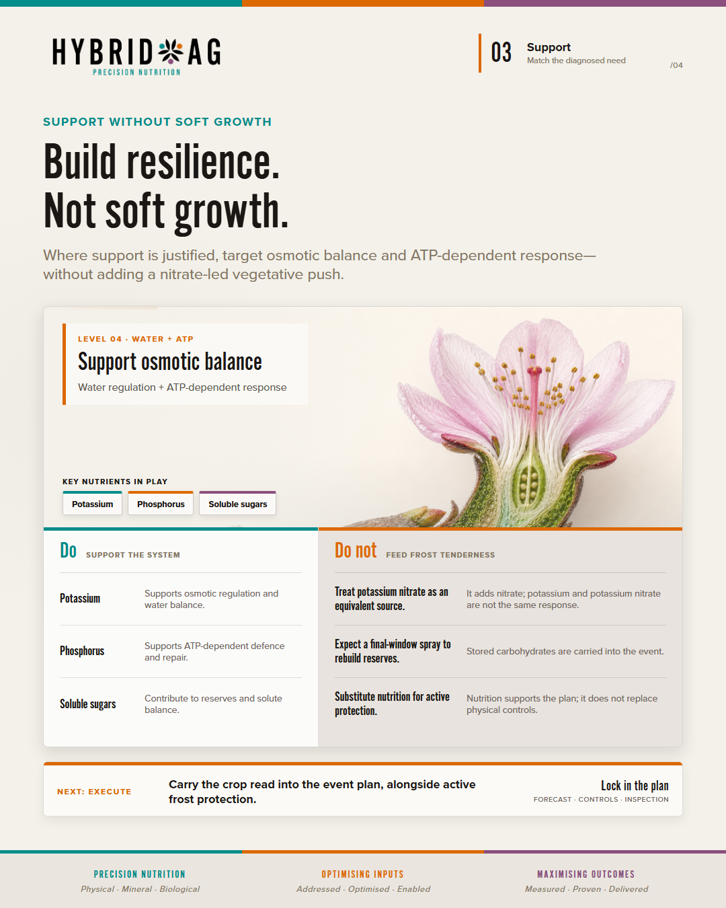
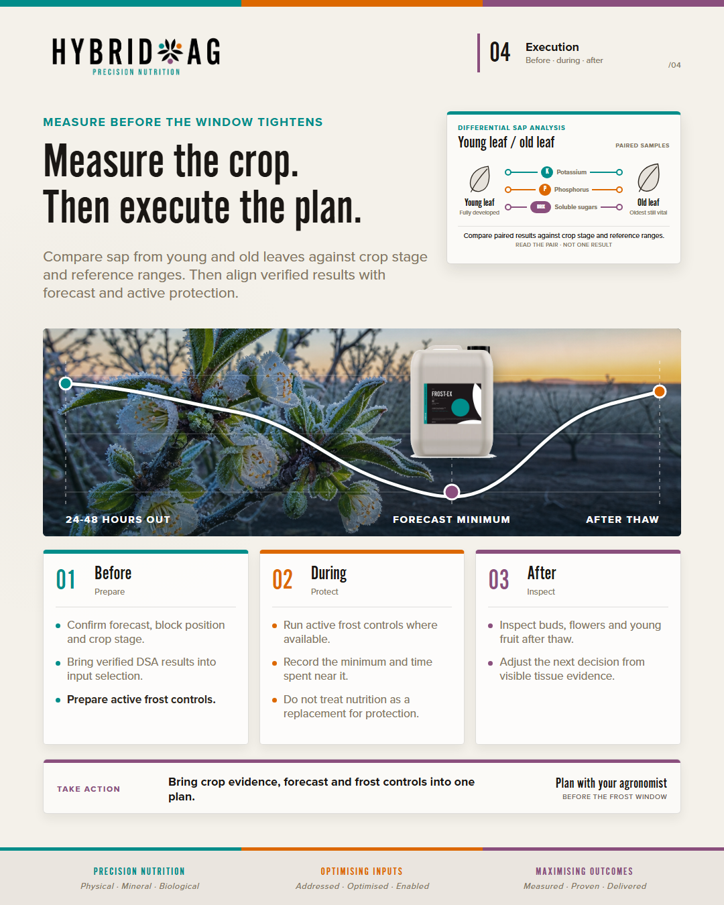

Hybrid Ag · Horticulture · Selected Social Post
Frost readiness
Concept 5 — Decision-Led Refinement. Four final-size carousel assets and the selected platform copy, held together as one review and publishing reference.
Selected concept · 1080 × 1350 PNG
Publication checks open
Carousel assets
Upload order 01–04 · select any image to open the full-size file




Selected platform copy
Decision-led captions · wording preserved from the final Concept 5 package
We haven't shared one of these deeper agronomy breakdowns for a while. We're bringing them back. Over the coming posts, we'll unpack practical agronomy across different crops and production systems: what to look for, why it matters and how the evidence changes the plan. First up: frost readiness. A forecast tells you the event is coming. It does not tell you what the crop is carrying into it. The final forecast window matters, but it cannot rebuild the crop's foundation. Before choosing a response, read the crop's starting position: crop stage, stored carbohydrates, nitrogen form, tissue integrity and osmotic balance. Low reserves can limit what the final window can achieve. Tender, nitrate-led growth may call for restraint rather than another nitrate push. That crop read should determine where to support, where to hold back and what to inspect after thaw. Where support is justified, match the source to the diagnosed need. Bring crop evidence, forecast and active frost controls into one plan. Nutrition can support readiness; it does not replace physical protection. After thaw, inspect buds, flowers and young fruit before adjusting the plan. If the crop read suggests a role for nutrition, your Hybrid Ag agronomist can help determine whether Frost-Ex belongs in the wider frost plan. #HybridAg #FrostManagement #Horticulture #PrecisionNutrition #PlantHealth
We're bringing back deeper agronomy breakdowns. Over the coming posts, we'll unpack practical agronomy across different crops and production systems: what to look for, why it matters and how the evidence changes the plan. First up: frost readiness. A forecast tells you the event is coming. It does not tell you what the crop is carrying into it. 01 - Set the priorities. 02 - Read what is in the crop's fuel tank. 03 - Match support to the diagnosed need. 04 - Align crop evidence, forecast and active frost controls. A crop short on reserves calls for a different response from one carrying tender, nitrate-led growth. Paired young- and old-leaf sap results can add structure to that crop read when interpreted against crop stage and reference ranges. Nutrition can support readiness; it does not replace physical frost protection. After thaw, inspect affected tissue before adjusting the plan. #HybridAg #FrostManagement #Horticulture #PrecisionNutrition #PlantHealth
We haven't shared one of these deeper agronomy breakdowns for a while. We're bringing them back. Over the coming posts, we'll unpack practical agronomy across different crops and production systems: what to look for, why it matters and how the evidence changes the plan. First up: frost readiness. A forecast tells you the event is coming. It does not tell you what the crop is carrying into it. The final forecast window matters, but it cannot rebuild the crop's foundation. Frost readiness is not a single-input decision. It is a sequence: 1. Establish the priority hierarchy before the forecast tightens. 2. Read the crop's starting position: crop stage, stored carbohydrates, nitrogen form, tissue integrity and osmotic balance. 3. Use that diagnosis to decide where support is justified, where restraint is needed and which source best matches the need. 4. Bring crop evidence, forecast and active frost controls into one event plan. Stored carbohydrates help frame available reserves. Nitrogen form helps distinguish balanced nutrition from tender, nitrate-led growth. Tissue integrity and osmotic balance add context to how the crop may manage dehydration stress. The source still matters: a nitrate-led response is not equivalent to supporting osmotic balance, energy or reserves. Paired young- and old-leaf sap results can add further structure when interpreted against crop stage and appropriate reference ranges. After thaw, inspect affected tissue before adjusting the plan. Nutrition can support frost readiness, but it does not replace active physical protection. If the crop read suggests a role for nutrition, your Hybrid Ag agronomist can help determine whether Frost-Ex belongs in the wider frost plan. #HybridAg #FrostManagement #Horticulture #PrecisionNutrition #PlantHealth
X
We're bringing back deeper agronomy breakdowns across crops and production systems. More to follow. First up: frost readiness in horticulture. Read crop reserves and tissue status, match support to need and keep physical protection central. #Horticulture #FrostManagement
Source: Hybrid Ag Frost Post · Concept 5 — Decision-Led Refinement · packaged 23 July 2026. Slide 4 pack artwork is a concept visual and is not proof of current packaging.